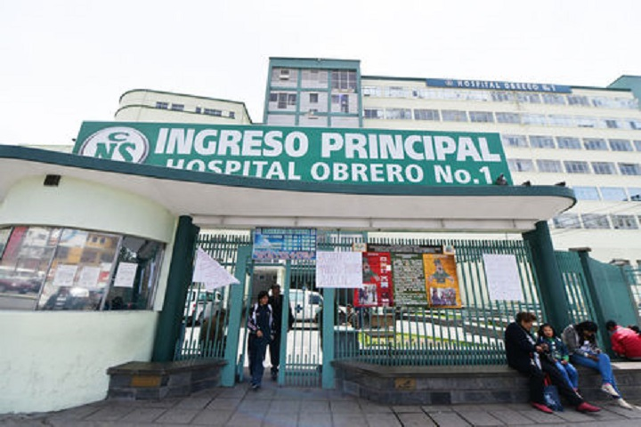

HISTORIA DEL COVID-19
La enfermedad por coronavirus de 2019, más conocida como COVID-19, covid-19 o Covid, es incorrectamente llamada neumonía por coronavirus, coronavirus o corona, es una enfermedad infecciosa causada por el SARS-CoV-2.
Produce síntomas que incluyen fiebre, tos, disnea (dificultad respiratoria), mialgia (dolor muscular) y fatiga. En casos graves se caracteriza por producir neumonía, síndrome de dificultad respiratoria aguda, sepsis y choque circulatorio. Choque séptico es la forma más común en estos casos, pero los otros tipos también pueden ocurrir. Por ejemplo, choque obstructivo puede resultar de embolia pulmonar, una complicación de Covid-19. Según la OMS, la infección es mortal entre el 0,5 % y el 1 % de los casos. No existe tratamiento específico; las medidas terapéuticas principales consisten en aliviar los síntomas y mantener las funciones vitales.
La transmisión del SARS-CoV-2 se produce mediante pequeñas gotas microgotas de Flügge que se emiten al hablar, estornudar, toser o espirar, que al ser despedidas por un portador (que puede no tener síntomas de la enfermedad o estar incubándola) pasan directamente a otra persona mediante la inhalación, o quedan sobre los objetos y superficies que rodean al emisor, y luego, a través de las manos, que lo recogen del ambiente contaminado, toman contacto con las membranas mucosas orales, nasales y oculares, al tocarse la boca, la nariz o los ojos. También está documentada la transmisión por aerosoles ( < 5µm). La propagación mediante superficies contaminadas o fómites (cualquier objeto carente de vida, o sustancia, que si se contamina con algún patógeno es capaz de transferirlo de un individuo a otro) no contribuye sustancialmente a nuevas infecciones.
Los síntomas aparecen entre dos y catorce días (período de incubación), con un promedio de cinco días, después de la exposición al virus. Existe evidencia limitada que sugiere que el virus podría transmitirse uno o dos días antes de que se tengan síntomas, ya que la viremia alcanza un pico al final del período de incubación. El contagio se puede prevenir con el lavado de manos frecuente, o en su defecto la desinfección de las mismas con alcohol en gel, cubriendo la boca al toser o estornudar, ya sea con la sangradura (parte hundida del brazo opuesta al codo) o con un pañuelo y evitando el contacto cercano con otras personas, entre otras medidas profilácticas, como el uso de mascarillas. La OMS desaconsejaba en marzo la utilización de máscara quirúrgica por la población sana, en abril la OMS consideró que era una medida aceptable en algunos países. No obstante, ciertos expertos recomiendan el uso de máscaras quirúrgicas basados en estudios sobre la Influenza H1N1, donde muestran que podrían ayudar a reducir la exposición al virus. Los Centros para el Control y Prevención de Enfermedades (CDC) de Estados Unidos recomiendan el uso de mascarillas de tela, no médicas. Recomendación de los CDC (febrero de 2021)
Para prevenir COVID 19
- lavate las manos
- desinfecta los objetos
- usar barbijo
- vacunate
Red de vacunacion
| Hospital ARCO IRIS | |
| Hosital Obrero |  |
como organismo sanitario especializado para las Américas y Oficina Regional de la Organización Mundial de la Salud, la OPS está proporcionando liderazgo, coordinación y asistencia esenciales para
luchar contra la propagación de la COVID-19, salvar vidas y proteger a los grupos de población más vulnerables -incluidos los trabajadores sanitarios- en los 51 países y territorios de la Región.
Si bien se lograron muchos avances durante el año pasado, la Región de las Américas se ha mantenido obstinadamente como el epicentro de la pandemia de COVID-19. La OPS lanzó su Estrategia de respuesta al COVID-19 2021 y su llamado a los donantes para mantener y ampliar la respuesta a la pandemia de COVID-19 en las Américas, suprimir la transmisión comunitaria del virus y mitigar el impacto de la pandemia en la salud a largo plazo.
CREDITOS